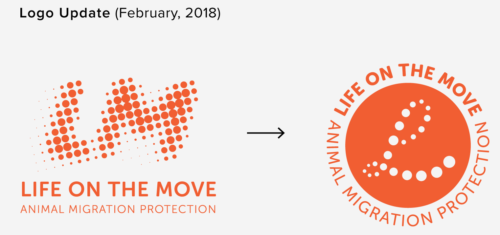

PROJECT: LIFE ON THE MOVE
LIFE ON THE MOVE
ANIMAL MIGRATION PROTECTION
System Design | 2017 | College Project
Life on the Move is an organization that protects animal migration. People should be aware of how human development is affecting animal migrations, and we should find ways to continue living together with animals.
In this project, I do not use any images of animals. Instead, I use dots to represent all kinds of animals and to show the movement of animal migration. Based on this idea, I developed this visual system for Life on the Move.
The mission statement of Life on the Move is, “It’s so good to be home. Animals should feel the same.”

This poster has been designed for the lecture series about animal migration at California Academy of Sciences on April 25th, 2018. I incorporated bird migration patterns into the type to show the message, “LIFE ON THE MOVE.”
There is also a promotional video I designed for the lecture. It starts with facts about bison, songbirds, and salmon migrations, and it ends with information about the lecture series. The visual language also incorporates dots.
Here is the video.
SEEDS FOR SALVATION
Packaging Design | 2017 | College Project
In the project, I also made chocolate and coffee bean packaging.
COFFEE and CACAO trees make good habitats for migratory birds.
In the midst of altered and shrinking habitats in both North and South America, migratory birds have found a sanctuary in the forest-like environment of traditional coffee plantations. In eastern Chiapas, Mexico, Smithsonian Migratory Bird Center biologists found that traditionally-managed coffee and cacao (chocolate) plantations support over 150 species of birds, a greater number than is found in other agricultural habitats, exceeded only in undisturbed tropical forests.
SHADE GROWN COFFEE and CACAO TREES are great for birds and for people.


Each packaging represents a different species of bird, which is shown through the stickers and the wrappers on the packaging. There are three unique coffee blends and three different chocolate flavors. The natural gradient background indicates nature, and the dots show the idea of animal migration.
The coffee beans and chocolate come from shade grown trees in different parts of the world. The map and text on the back of the packaging show how these specific birds are being protected by shade grown trees in particular parts of the world.

I also incorporate the patterns I designed for the system as a representation of animal migration. These buttons were made for fun.
Copyright © Yifeng Lou. All rights reserved.